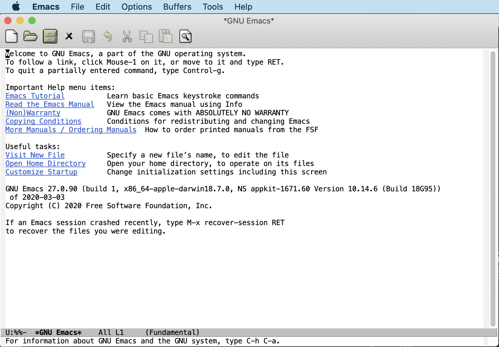
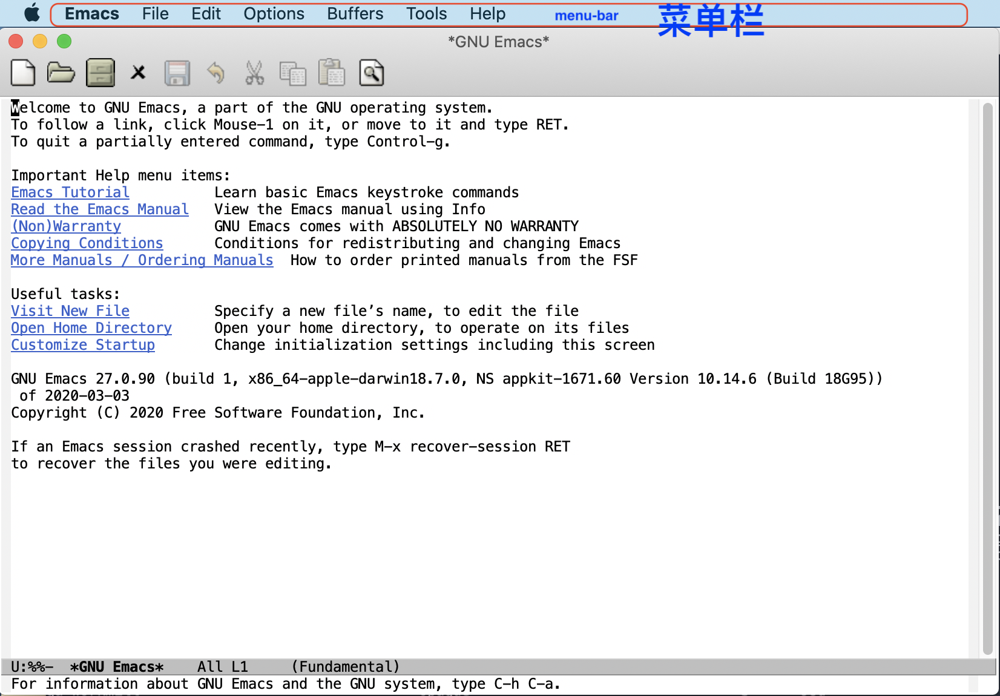
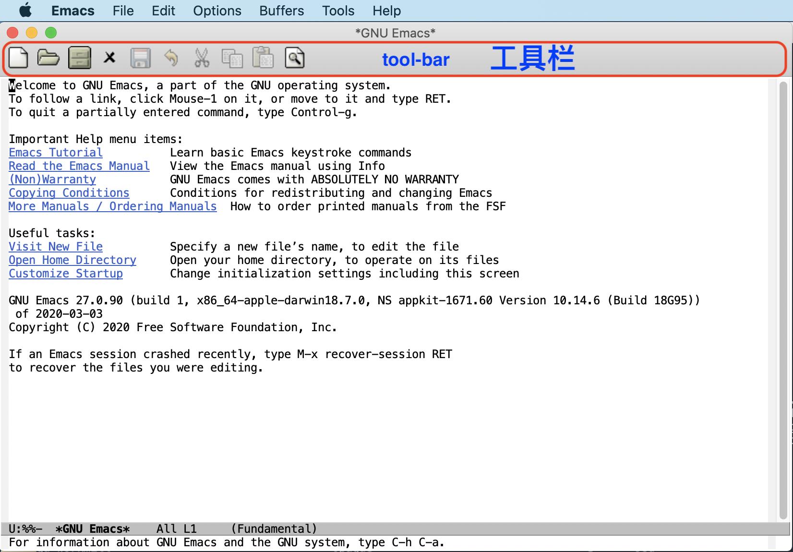
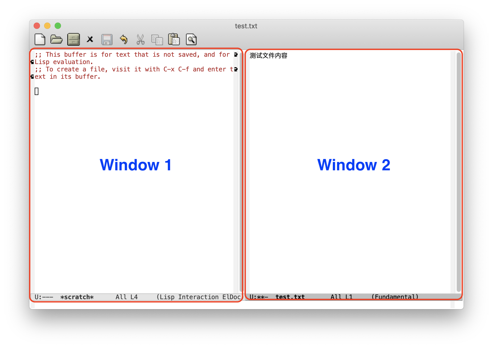
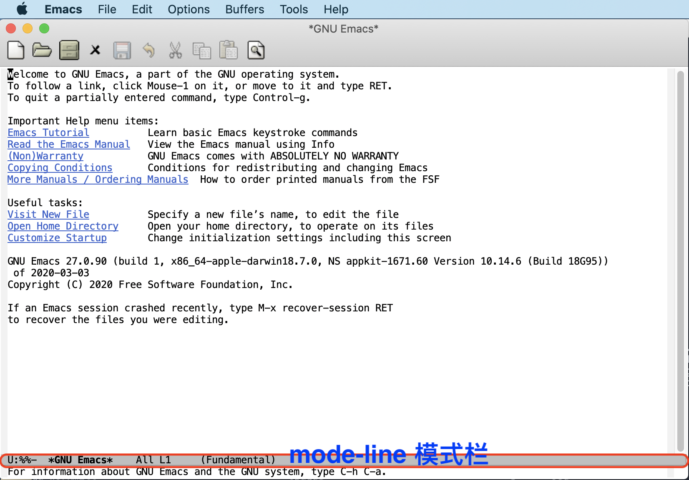
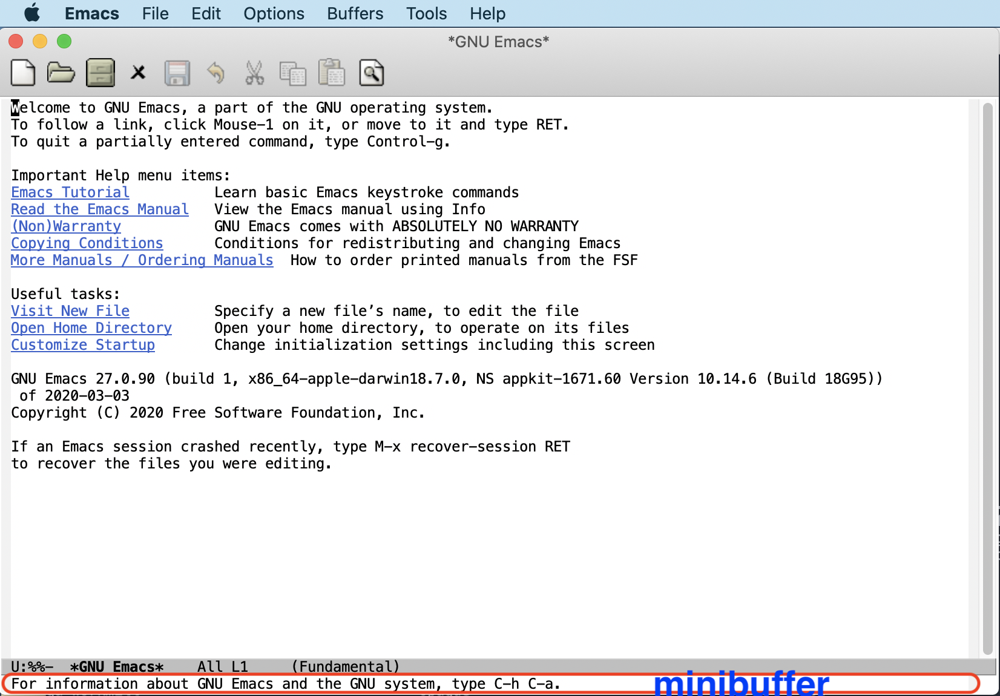
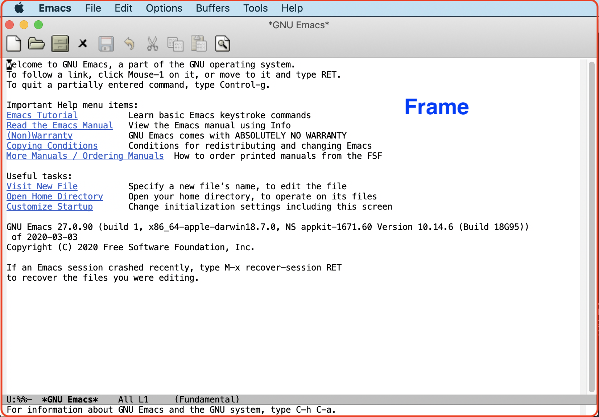
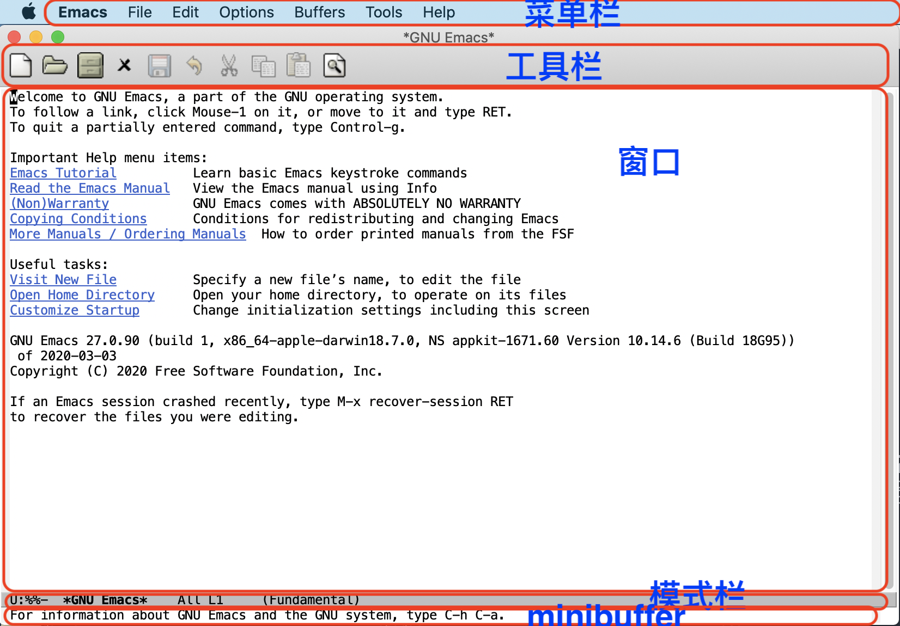

Created: 2020-10-14 Wed 10:46
$ brew cask install emacs
下载地址:
http://mirrors.ustc.edu.cn/gnu/emacs/windows








| Ctrl-g | 停当前操作 |
| Ctrl-x Ctrl-s | 保存 |
| Ctrl-x Ctrl-c | 退出 |
配置文件路径: ~/.emacs.d/init.el
$ export PRELUDE_INSTALL_DIR="$HOME"
$ export PRELUDE_URL="https://gitee.com/tendant/prelude.git"
$ curl -L https://gitee.com/tendant/prelude/raw/master/utils/installer.sh | sh
打开文件：~/.emacs.d/prelude-modules.el
将下面这行
;; (require 'prelude-clojure)
改成
(require 'prelude-clojure)
安装lein
$ lein new app demo